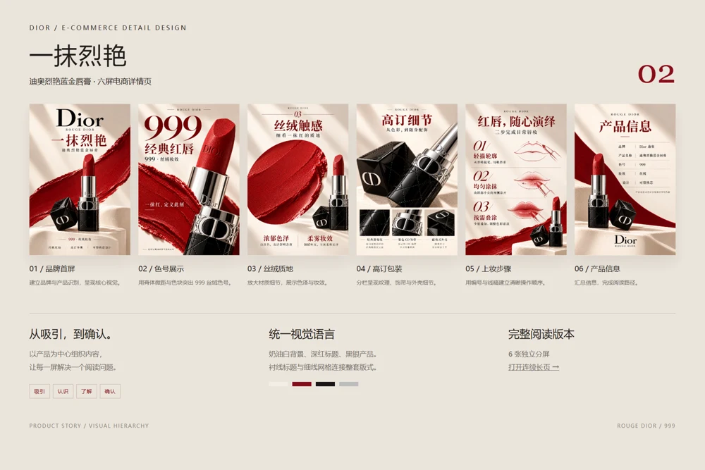
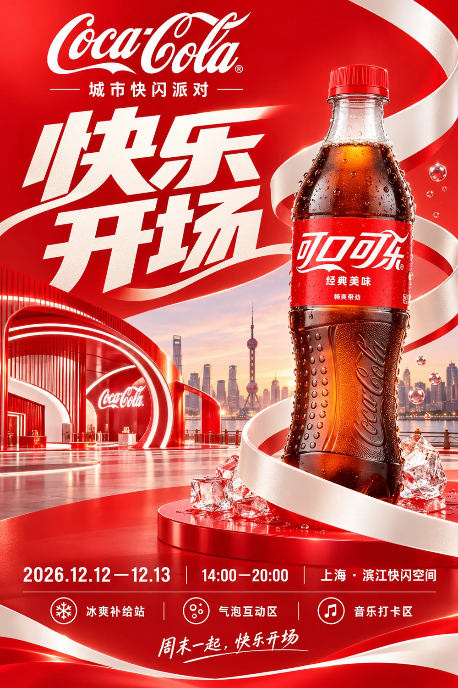
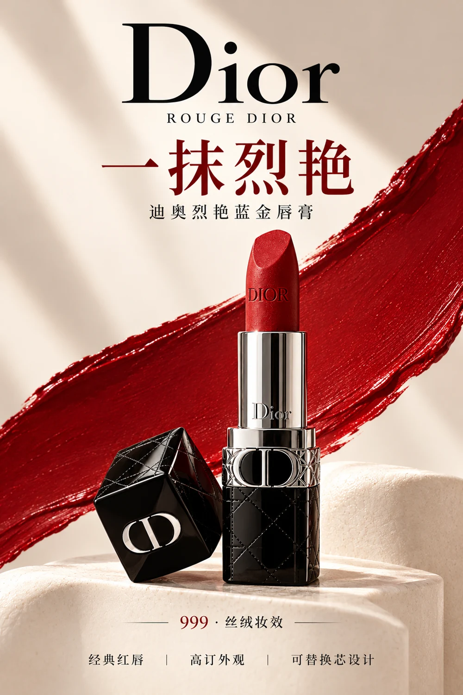

查看项目 ↗PENG JIANSONG / SELECTED WORKS
用视觉，
让表达被看见。
彭建松的设计作品集
电商设计 / 活动视觉 / 品牌应用 / 动画视频
01—08从单张海报，到完整视觉延展。


DESIGN SELECTION
视觉表达✳信息编排✳产品叙事✳多场景延展
THE WORK INDEX
作品目录 / 08
点击项目，查看完整设计与细节。
ABOUT ME / PENG JIANSONG
关于我
彭建松
长春光华学院
数字媒体艺术 · 本科
2022.09—2026.06
以个人创意为起点，
连接视觉设计与动画表达。
我是彭建松，数字媒体艺术专业本科毕业生，求职方向为视觉设计、平面设计及动画与视频相关岗位。具备平面视觉、动画制作和 AIGC 内容生产经验，关注画面表现、信息层级与叙事节奏。
能够独立推进从内容构思、分镜与素材组织，到动画、配音、剪辑及成片交付的制作流程。作品集中的三部动画均由我个人全流程完成，动画环节采用 Adobe Animate 手工制作。
平面自主练习以个人创意和审美判断为主导，结合 AI 辅助开展视觉探索与制作，由我完成方向把控、方案取舍、版式整合与最终呈现。
视觉与平面设计手工动画与视频AIGC 创意应用
相关经历
海南星芒屿创文化传媒有限公司 · 实习
负责 AI 真人短剧全流程制作，涵盖剧本制作、资产生成、分镜制作、视频生成及剪辑，完成从剧本到成片的制作交付。同时运用 AI 工具优化分镜制作、资产规划和质量检查流程。
江西诺大网络科技有限公司 · 实习
负责动画内容全流程制作，涵盖配音、角色选择、背景与道具选择、分镜制作、动画制作及剪辑。累计参与 40 集系列内容制作，总成片时长约 60—70 分钟。
常用工具与能力
Photoshop / Adobe Animate / After Effects / Premiere / 剪映
ChatGPT / 即梦 / 可灵 / Codex 与 Agent 工作流
设计荣誉
- 第 12 届 NCDA 未来设计师艺术设计大赛 · 吉林省赛区一等奖
- 第 18 届中国好创意艺术设计大赛 · 国家级三等奖
- 吉林省第 6 届冰雪创意大赛 · 赛道一等奖、二等奖